CS184/284A Spring 2026 Homework 2 Write-Up
Link to webpage: https://cal-cs184-student.github.io/hw-webpages-qlllllll/hw2/index.html
Link to GitHub repository: https://github.com/cal-cs184-student/hw2-meshedit-hw-2

Overview
This project explores several fundamental techniques for geometric modeling and mesh processing. The first part implements de Casteljau’s algorithm for evaluating Bezier curves and extends it to Bezier surfaces using separable 1D evaluations. The next part works with the halfedge mesh data structure to compute area-weighted vertex normals for smooth shading and to implement local mesh editing operations, including edge flip and edge split. Finally, Loop subdivision is implemented to perform mesh upsampling by splitting edges, flipping newly created edges, and updating vertex positions using weighted averages of neighboring vertices. Together, these components demonstrate how curves, surfaces, and triangle meshes can be represented and manipulated algorithmically, and how local connectivity operations and subdivision rules can be used to generate smoother and higher-resolution geometry.
Section I: Bezier Curves and Surfaces
Part 1: Bezier curves with 1D de Casteljau subdivision
de Casteljau's algorithm evaluates a point on a Bezier curve by repeatedly applying linear interpolation between adjacent control points using parameter t.
At each step, a new set of intermediate points is computed.
\[p_i' = lerp(p_i, p_{i+1}, t) = (1 - t)p_i + tp_{i+1}\]
In the implementation, evaluateStep(...) computes one subdivision level by linearly interpolating each adjacent pair of control points.
For every pair (p_i, p_{i+1}), a new point is computed as (1 - t)p_i + tp_{i+1} and stored in a new vector, producing one fewer point than the previous level.
This procedure is repeatedly applied to the resulting set of points until a single point remains, which is returned as the evaluated point on the curve.
Original

Level 1

Level 2

Level 3

Level 4

Final

Modified Bezier curve by moving the original control points and adjusting the parameter t.
Modified Curve
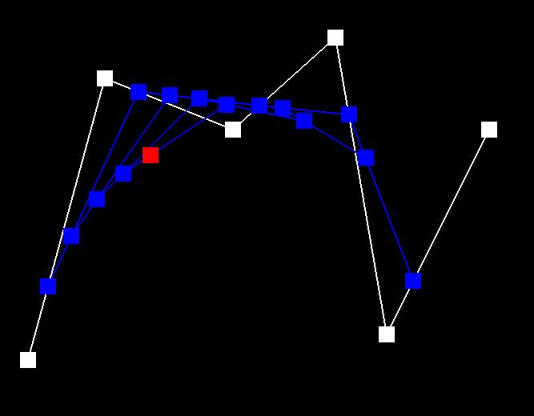
Part 2: Bezier surfaces with separable 1D de Casteljau
de Casteljau’s algorithm extends to Bezier surfaces by applying the 1D algorithm twice.
Given an n×n grid of control points and parameters u and v, each row of control points is first treated as a Bezier curve and evaluated at parameter u using de Casteljau’s algorithm.
This produces n intermediate points. These points then form another Bezier curve along the other direction, which is evaluated at parameter v.
The resulting point is the point on the Bezier surface corresponding to the parameters (u, v).
In the implementation, evaluateStep(...) performs one level of linear interpolation between adjacent 3D control points.
evaluate1D(...) repeatedly applies this step until a single point remains, evaluating a Bezier curve at parameter t.
Finally, evaluate(...) first evaluates each row of control points using parameter u, then evaluates the resulting points using parameter v to obtain the final point on the surface.
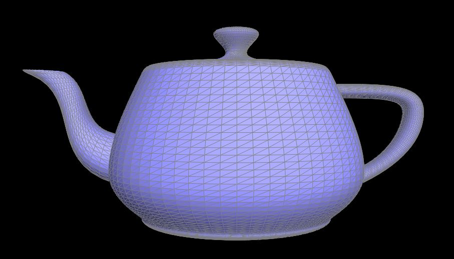
Section II: Triangle Meshes and Half-Edge Data Structure
Part 3: Area-weighted vertex normals
Area-weighted vertex normals are computed by averaging the normals of all faces incident to a vertex, weighted by their triangle areas.
Using the half-edge data structure, the algorithm iterates over all faces around the vertex by following the outgoing half-edge and repeatedly traversing twin()->next().
For each incident triangle, the three vertex positions are used to compute two edge vectors, and their cross product gives the face normal scaled by the triangle area.
These vectors are accumulated for all neighboring faces and the final result is normalized to produce the vertex normal.
Original Mesh
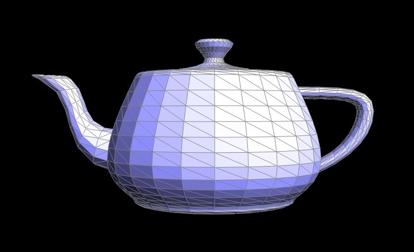
Vertex Normals
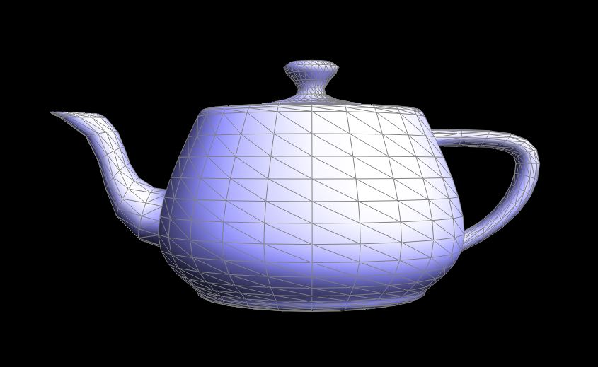
Part 4: Edge flip
The edge flip was implemented by first collecting the two triangles adjacent to the selected edge and the six local halfedges involved in this neighborhood.
Suppose the original shared edge was (b, c) with opposite vertices a and d. The flip replaced edge (b, c) with edge (a, d) by reassigning the six halfedges so that the two original triangles (a, b, c) and (c, b, d) became (a, d, c) and (a, b, d).
In code, this was done by updating the next, twin, vertex, edge, and face pointers of h0 through h5 using setNeighbors(...), and then resetting the halfedge pointers of the affected edge, faces, and vertices so that all local connectivity remained consistent.
During debugging, the most common issue was incorrect pointer reassignment, especially assigning a face to a halfedge that no longer belonged to that face after the flip. Repeatedly flipping the same edge and checking for broken connectivity was helpful for verifying correctness.
Before Edge Flips
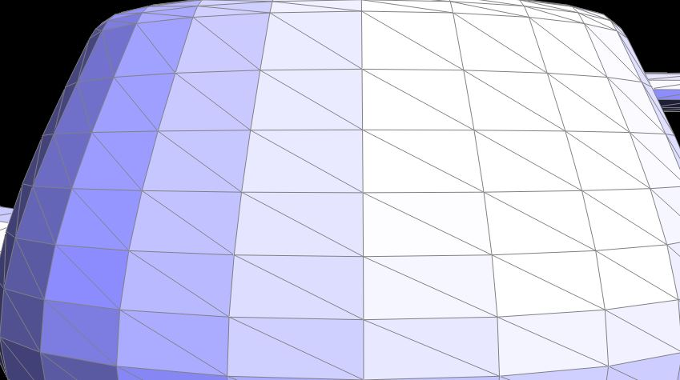
After Edge Flips
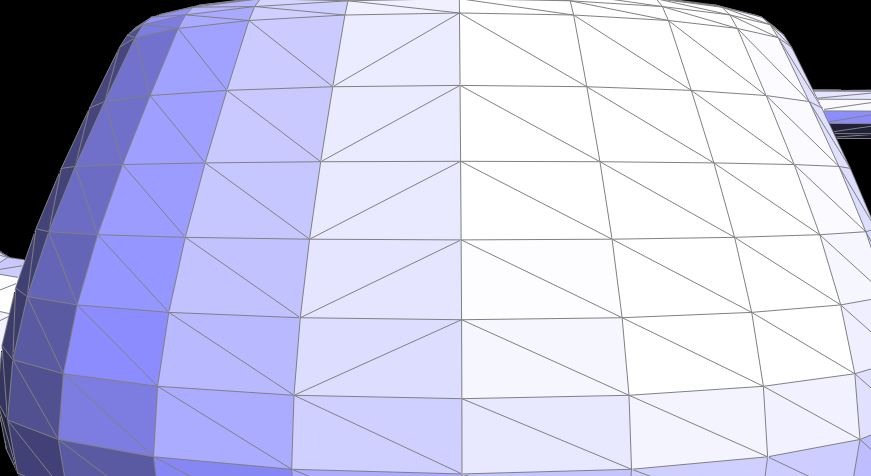
Part 5: Edge split
The edge split operation first retrieves the two adjacent faces, the six original halfedges, and the local vertices and edges around the selected edge.
If either adjacent face is a boundary face, the function returns immediately.
A new vertex, three new edges, two new faces, and six new halfedges are then created, and the new vertex position is set to the midpoint of the original edge.
The local connectivity is updated by calling setNeighbors(...) to reconnect the original and newly created halfedges into four triangles.
Afterward, the halfedge() pointers of the affected edges, faces, and vertices are reassigned, and the new and old elements are marked using isNew for later use in Loop subdivision.
During debugging, one issue was that a face appeared to be missing after the split. The problem was not that the face itself was missing, but that its halfedge() pointer was assigned to a halfedge belonging to a different face. Updating the face-to-halfedge assignments fixed the missing-face issue.
Before Edge Split
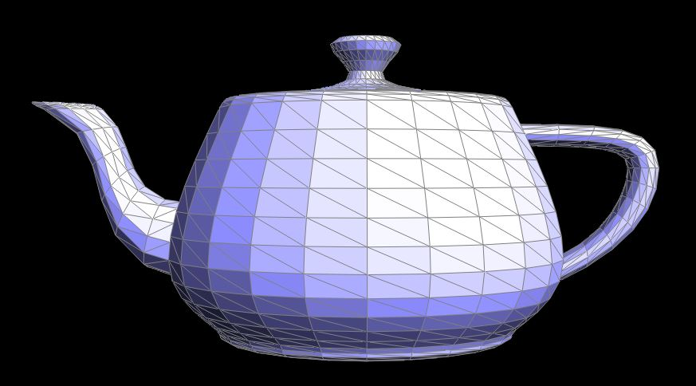
After Edge Split
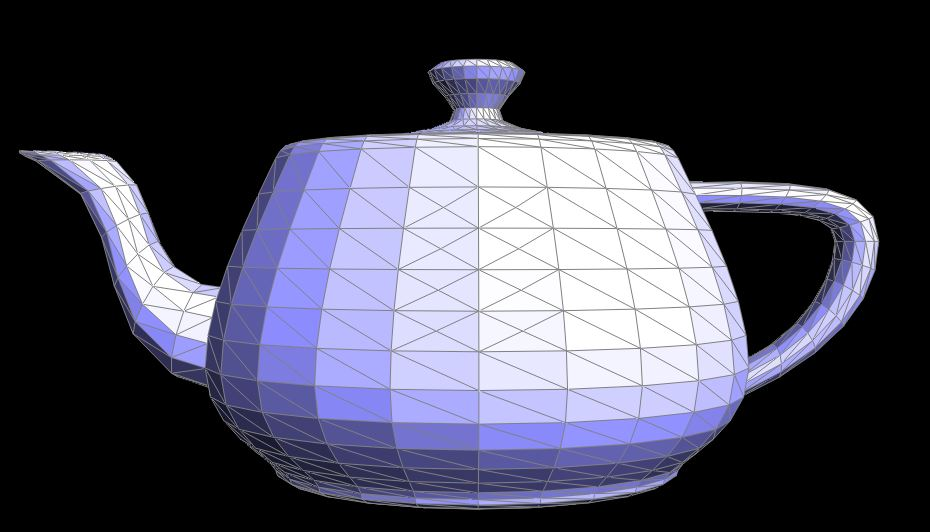
Before Edge Split and Flip
After Edge Split and Flip
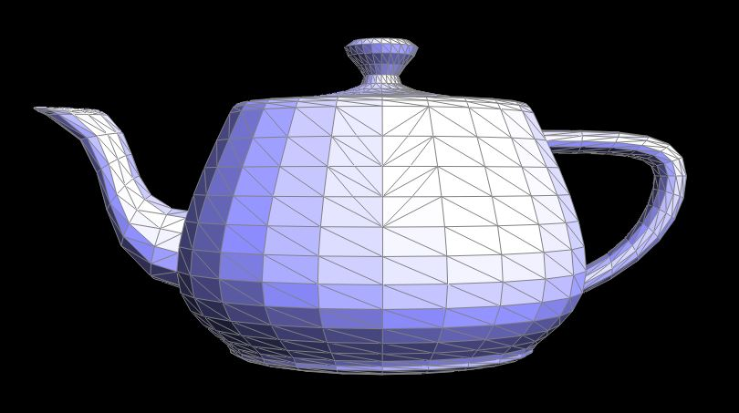
Part 6: Loop subdivision for mesh upsampling
Loop subdivision was implemented in three main steps. First, the updated positions for all original vertices were computed using the Loop subdivision weighting rule and stored in Vertex::newPosition.
For each original edge, the position of the new vertex that will appear after splitting the edge was computed using the weighted average rule and stored in Edge::newPosition.
Next, every original edge in the mesh was split using splitEdge(...), creating new vertices at edge midpoints.
After splitting, edges connecting one old vertex and one new vertex were flipped using flipEdge(...) to form the correct 4-1 subdivision connectivity.
Finally, all vertex positions were updated by copying the stored values from newPosition to position.
Before Upsampling
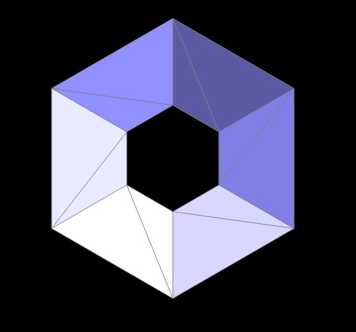
After Upsampling
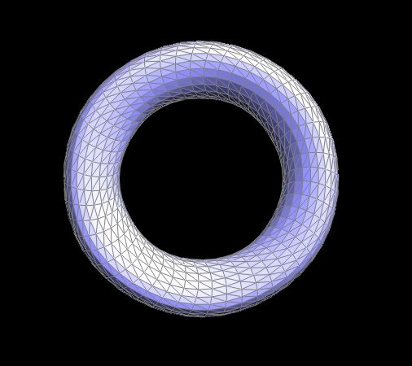
After repeated Loop subdivision, sharp edges and corners become smoother and the mesh approaches a smooth limit surface. Since the new vertex positions are computed as weighted averages of neighboring vertices, high curvature features gradually shrink. For example, the corners of a cube become rounded after several iterations of subdivision.
Cube After Repeated Subdivision
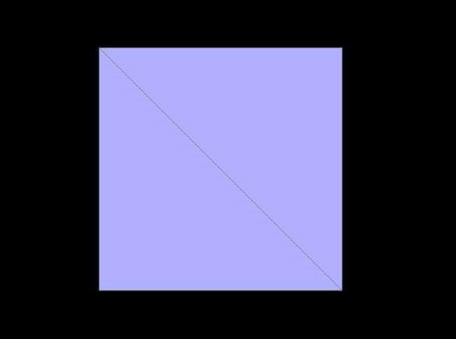
Cube After Preprocessing
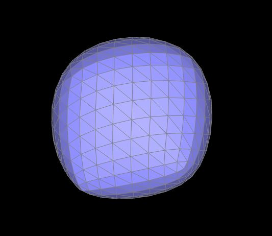
When Loop subdivision is repeatedly applied to the cube, the result becomes slightly asymmetric. This happens because each square face of the cube is represented as two triangles, and the diagonal used to split the square is not symmetric. Since Loop subdivision operates on triangles, the orientation of these diagonals affects how vertices are averaged and refined, which causes small asymmetries that accumulate over multiple subdivision iterations.
Cube After Repeated Subdivision
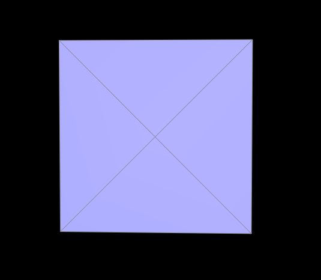
Cube After Preprocessing
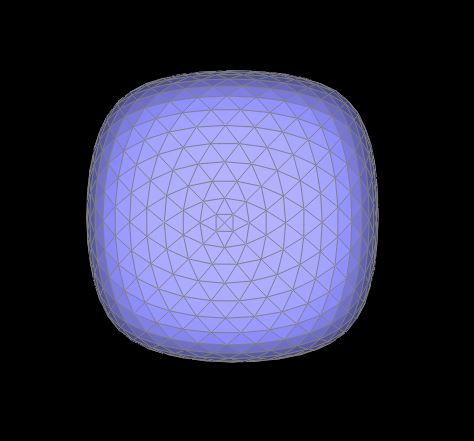
To reduce this effect, the cube was preprocessed by splitting the diagonal edge on each square face before applying Loop subdivision. Splitting these edges introduces a vertex at the center of each face and creates a more symmetric triangulation of the cube faces. With this more balanced connectivity, the subdivision rules are applied more uniformly across the mesh, and the resulting subdivided cube remains visually more symmetric.